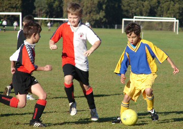

| Match Report - 26 July 2008 |
|
|
|
|
|
|
|
| U7 - Green |
North Ryde Koalas - Ryde Saints United A

|
|
|
|
North Ryde Green Koalas v Ryde Saints Manchester United!
I couldn't resist.
Not much I really want to report about this game other than we came up
against a very professional outfit last Saturday. I would like to think
I would be writing this in say four or five years when the kids are 11
or 12 years of age, but as it is the group of players from Ryde Saints
United appear to be ahead of their time. Granted they have some very talented
individuals but whilst this may be the case, I would like to think that the
players and not the coaching or support staff get more enjoyment out of a
game

Let's talk about our team shall we?
I've written throughout the season about how our guys have individually and
as a team done some quite remarkable things on the field but what I witnessed
on Saturday was more important than anything that's gone before them... they
showed tremendous character as a team and a never say die attitude whilst
being 'under the pump' from the opening whistle.
Jarvis, Lioda, James, Jack, and Daniel should all be very proud of how they
conducted themselves. They all played a great game as a team helping each
other out and putting their bodies on the line, particularly poor James who
seemed to have a target imprinted on him!
We were so impressed with their efforts that the coaching staff took the
unprecedented step of awarding TWO Player of the Match awards. Congratulations
to both Jarvis and James who were both fantastic.
In fairness to Ryde Saints, they are an extremely talented group who are well
coached and managed. Let's hope that the drive to succeed and score goals
doesn't act as a deterrent at a later stage in their development.
P.S. Sorry for the late report... I forgot... or maybe I tried to forget?
- Paul Bonaventura
|
|
|
| U8 - Blue |
North Ryde 10 - Macquarie Dragons 0

|
|
|
|
The Blues romped home to a 10-0 win over the Macquarie Dragons in what was
essentially a one-sided affair from start to finish. And while there isn't
much fun in gloating over a rather predictable victory, the game did give
the Blues an opportunity to stretch their legs and move the ball effectively
around the field.
All the players had a chance to run with the ball with the exception of the
goal keeper, whose time in the nets was hardly very exhilarating. Mind you,
there was that one occasion in the second half when Charlie, designated
keeper for the second half, found himself deep in the opposition territory
and had to scamper back to his goals at a serious pace to prevent a
near-certain goal when the Dragons broke through a gap in the Blues
defence in the dying moments of the game

The goals came thick and fast, five in the first half and another five in
the second. However, there must have been a total of at least 20 to 30
attempts at goal and the Dragons keeper had his work cut out for him as he
valiantly defended his turf. Taking advantage of a weak opposition defence,
the Blues were able to move the ball quickly and efficiently across the field
with an effective passing strategy and by using their free space to the max.
And the shots that flew into the goalmouth from the left and right halves of
the field were as encouraging as the players who made themselves available
in the goalmouth to complete the transaction.
Pictures of this record win by the Blues has been captured in a short
video
and in the following collection of photos...
|
Is it going to go in? Does it go in? Who can remember?
|
Eli, Shannon and Christopher start a fresh charge
|
|
|
|
Adam on one of his many sprints down the sideline
|
Charlie with a precision corner kick into the goalmouth
|
|
|
|

David threads his way through the opposition
|
Tom O follows the course of Tom H's stylish throw in
|
|
|
|
Patrick and Christopher find loads of free space for Tom's throw
|
Jack tears down the track as only Jack can
|
Well done Blues 
- Mark Howard
|
|
|
|
|
|
The pictures capture some of the story...
- Photos submitted by Mandy Van
|
|
|
|
|
|
Our first 8:30 game this season and it showed. Our lads and lasses took
a while to get going, but soon showed us all that they know the basics of
passing, pull backs and positional play.
Harrison and Luke our 2 goalies were very heroic saving goal after goal.
We all remembered that it is up to the other 8 players to ensure that it
isn't left to the goalie to save the ball from getting net-bound.
Player of the match Maggie was as hungry as ever showing us all that
never-ending running and tackling are great tools to have in getting
possession of the ball and to 'make it yours'.
Tim was ever present and ever thinking in his important midfield role this
week and strolled away with the well deserved encouragement award.
Special mention to Thomas who continues to show us he is a force to be
reckoned with, with some bustling runs and big clearances.
In the end we were simply beaten by a better side. With the end of the
season in sight, it is just about time for the players to put together all
the new skills they have been so willing to learn this season and come up
with the bickies next week.
- Andrew Curdie (Coach)
|
|
|
|
|
|
First up, many thanks extended to Thomas MacLean, Jay Butler, Mitchell Lee
and Koray Kirk from U9/1 who came to our aid as once again, 4 boys down.
The boys certainly contributed to the efforts of the team. Josh went into
goal for the entire game. He managed to break in his new goalie gloves. He
did a fantastic job protecting the goals when under attack.
Early in the game NRS were very much in GLH half with the odd occasion when
GLH broke free towards NRS goal. The half time score was Nil all. GLH were
certainly not the same team from when we met them last. GLH did well to
attack with a couple of corner kicks. Although tense moments and from afar
it looked like NRS would conceive a goal. However, with Josh's efforts as
goal keeper and the defenders we managed to repel the ball away. Tom did a
fantastic kick midway from the centre line towards GLH goal, the aim was
excellent. Alas, the ball landed at the goal keeper's feet and was saved.
Both Tom and Aymon managed to out run the GLH defenders and broke free, Tom
passed the ball to Aymon short of the goal and Aymon managed to sink the
ball into the back of the net.
I don't know what it is with the GLH team but in each of the three matches
against them there was significant extra time due to injury with a number
of boys coming down during play on both sides. And once again we managed
to collect a yellow card when playing GLH.
Man of the match was awarded to Jared, who is out with injury, for turning
up each week to support his team.
On a high note, the team's efforts were rewarded with a glorious win against
the 4th placed team of the 10/1 comp.
What a great way to finish the season. Well done!
- Lesley Campbell (Manager)
|
|
|
|
|
|
It was a beautiful day with not a cloud in sight. North Ryde Nitros were
ready to take on the West Ryde Rovers under the new management of Arman's
dad, AJ. This was due to the absence of Paul. Five other players were also
unable to play and these were Hayden, Luke, Cameron, James and Lewis.
Nathaniel, Manauv, Taj and Rob replaced them from the U12/6 team leaving
us with two reserves. This was going to be one tough match.
The action of the first half had just begun. There were a few throw-ins in
the first few minutes. The Nitros were lucky as one of the Rovers' best
players was off the field. As the whistle blew, both teams went straight
into attack. Taj and Tom had good runs up the sideline and some good crosses
but alas, no one was there. Tom also had a thrilling shot, which was a goal
to be but the post was on the Rovers side. Rob and Nathaniel showed great
defence capabilities in conjunction with Chris and Ben. Lachie also had a
few good saves. The boys ended the first half being the dominant team.
Second half made the Rovers come out, desperate for a goal. Not long after
the whistle, chaos began. Two penalties to both sides saw the ball go back
and forth. Elia and Arman tried to keep the ball in their half but the
decorated sphere always came back in our half. Kyle and Zac also found
themselves with the ball. Then the Rovers made a break away towards our goal
and a shot that was only to be saved by Lachlan. Suddenly the ball popped out
of his hands. The ref calls a penalty, which West Ryde strongly objected to.
It was a good save and also a match-saving save. Both teams were desperate
for goals but none were scored. The match ended with all the boys walking
happily off the field. The result was 0-0.
As AJ said that a good training session on Thursday meant a good game on
Saturday. Well done to all the boys.
- Nathan Seeto (Player)
|
|
|
|
|
|
Well the boys saved their best till the last round of the competition proper.
Playing the team lying second in the competition they played outstanding
soccer and took Glenhaven totally by surprise from the opening whistle. The
opening goal was the result of some excellent team play and was well finished
by Stephen B-H. Glenhaven never fully recovered their composure and once again
our boys had the better of the game statistically with 11 shots on goal and
the degree of accuracy was reflected in the fact that the Glenhaven goal
keeper had to make 6 saves in addition to the 3 goals he allowed in.
Every player in the team contributed strongly with the smaller players
particularly Lewis B, Jordan C and Dana B continually getting the better
of their bigger opponents with sheer tenacity and at times some great ball
skills.
Tim B and Matt U both had strong games and it is pleasing to see them
rewarded for their efforts throughout the year.
Jake R, Liam T and Sam B were once again outstanding in defence with Sam
once again winning every challenge for the ball he was involved in and at
times showing some touches of brilliance with his ball skills. Stephen B-H
finished the competition rounds as he started with his name on the score
sheet with 2 goals to his credit he was ably supported by John P who once
again played strongly although still battling a troublesome knee problem.
The boys held the lead for much of the game and were never behind and probably
deserved to win however a soft goal from a long range shot which apparently
took a wicked bounce 45 seconds from the end robbed them of what would have
been a justified win. Notwithstanding this goal William G's efforts in goal
throughout the game was solid making 6 saves from 9 shots on goal by
Glenhaven. William no more drop kicks on restarts, we still have a pennant
to win.
Season Goal Scoring Statistics:
|
Stephen B-H |
|
: |
13 |
|
John P |
|
: |
4 |
|
Jordan C |
|
: |
2 |
|
Dana B |
|
: |
1 |
|
Tim B |
|
: |
1 |
|
Liam T |
|
: |
1 |
|
Lewis B |
|
: |
1 |
|
Sam B |
|
: |
1 |
|
Own goals |
|
: |
1 |
|
|
Actual goals scored |
|
: |
25 |
|
Bye goals awarded |
|
: |
6 |
|
Total goals |
|
: |
31 |
|
Goals against |
|
: |
25 |
Well done to Stephen B-H on topping the scoring list with some great finishing
touches throughout the year. Well done to everyone on a season where you have
all grown positively not only as players but as a team and as individuals under
the coaching of Scott who deserves a special thank you for his commitment and
efforts on behalf of the boys.
- Bill Greer (Team Correspondent)
|
|
|
|
|
|
First half highlights
With Coach Darren laying down the law to the players the previous week and
ordering them to be at the game 45 minutes before kickoff, most of the boys
obliged and turned up on time. Need I say anything about Pommie? Apparently
he had covered his butt and called Darren to explain why he would be late -
who knows what his excuse was, it just gave me something to write about in
my report!
It was a full strength side today with only Manu AWOL and Ado on the bench
from his chop on his ankle the week before. The bruise that ensued was a
good one that had all the colours of the rainbow.
The game started and the boys found themselves defending against the very
youthful Macquarie Uni side. This matchup is always enjoyable and tends to
bring out the best in both sides. The boys quickly got things under control
though and Macca ended up down the line and crossing a beautiful ball into
Pommie, who dummied brilliantly to the waiting feet of Bruce who put the
ball into the back of the net. This gave the boys the impetus to continue
in the Macquarie half for the next 10 minutes. Nth Ryde had certainly lifted
to the occasion as this was a must win or draw situation for them. If they
lost to Macquarie today, they would be relegated to fifth spot and Macquarie
would march into fourth spot and the finals. Could the boys continue to play
at this pace and skill level for the full 90 minutes? They weren't getting
any younger! Well it seemed they could for at least the first half, the next
major play of the game saw Pierre take the ball from the midfield around a
poor attempt at a tackle to score. Phew, it was great to see Pierre back in
the action. It had been a dry scoring spell for him and the mind was beginning
to play tricks on him. After he scored he displayed antics of a five year old
with a fabulous forward roll to celebrate. You could see and feel the relief
and the crowd went crazy!
The boys continued to pick up the tempo. This was becoming a very exciting
match and Nth Ryde were playing like they were all 20 year olds again back
in state league. Now I know I'm biased but I thought with my instructions to
Macca this morning to give it everything he's got (on the soccer field that
is), he certainly was doing the right thing and obeying them! Flocko, Mark M,
Bruce the Smithy's and Hicko were all having blinders also, not to mention
the rest of the team - I'll get to you all soon. Agro had some pressure
applied via a good shot by Macquarie and on the third grab he cleaned up
the ball without allowing Macquarie to score. In the process he copped a
nice kick to the head which stopped play for 5 minutes. Macca was ready with
the gloves just in case, but Agro the trooper got up and continued on. Would
the break in play do the opposition any favours? It would seem not, Nth Ryde
continued to apply pressure and Dutchie came into the game with in his usual
style with a few good runs up field and some brilliant tackles. Talking of
tackles, Bruce was tackling his heart out today although some of his tackles
were so passionate they were illegal and caused him to receive a yellow for
his efforts. It was a great example of how much Nth Ryde wanted to win, you
could feel it!
The half ended with Nth leading 2-0 and ending up fairly unscathed (although
the boys might disagree with me!)
Second half highlights
The second half saw Nth apply the same pressure as the first and Pierre had
an early shot on goal which strayed wide. Flocko maintained the centre
midfield but Nth had lost a little of what they were doing so well in
the first half. Balls weren't going to feet and the frustration crept in.
Macquarie put some pressure on but the boys resisted. The back line was doing
a great job of defending and Brownie was as vocal as ever! Brownie, Firgal
Macca and Smithy were playing their hearts out in the back line with slide
tackles and brilliant headers to force the ball up field. Passing then
started to be controlled and Flocko, Mark M, Pierre, Bruce and Dutchie put
together some of the best passes to run rings around Macquarie. Pierre ended
up on a nice through ball and flew backwards through the air to have a shot
a la Marco Van Basten. Unfortunately it didn't come off for Pierre but it
certainly made the crowd sigh! Pierre spends every day studying guys like Van
Basten in the hope that he can replicate their moves on the field and reap
the glory that comes along with a sensational goal - just remember to keep
it simple for now Pierre! When you've got 50 to your name at the end of the
season you can go for it!!!
As I was writing away and watching the play, Mark M ended up in front of me
packing his bags - I asked him where he thought he was off to and he said 'a
family Christening'. WHAT? I know I say it every week, but don't you know
boys that soccer comes first second AND third? Just when Nth Ryde looked
stable, Mark was going to leave them for family commitments; I couldn't
believe it and he had the hide to ask me if I could call him at the end
of the game with the result!
Hicko also was in the process of getting changed, simply because he's too
old and can't stop getting injured! Come on Hicko; show some heart, your
team needs you!
Back to the game, Nth's passing got better , Bruce travelled down the field
and flicked a cute pass back to Pommie who pushed it back to Bruce who
crossed it perfectly to Pierre's waiting head. The keeper unfortunately
spoiled our celebrations of a third goal however. The game had got exciting,
Pommie had lifted and so had all the boys. The win was definitely at the
forefront of the boys' minds and they were fighting hard for every ball.
The ref gave Macquarie a few free kicks but they were spot on and deserved.
The boys kept the pressure up and Col crossed a beautiful corner to the
waiting head of Macca, he hit the ball perfectly and it was only the arm
of a Macquarie Uni defender that stopped the ball going into the net.
Although we all saw the blatant hand ball, the ref was unsighted and didn't
give a penalty. It didn't matter though as Nth had the upper hand and time
was ticking away. Pierre put a beautiful ball through minutes later to Bruce
on the run, but the ball out ran him and ended up hitting the corner post
for a hole in one. Pierre then practiced his golf chip shot - not golf
Pierre - SOCCER! Oh well it didn't matter, the ref blew full time and Nth
Ryde marched on into the finals with a 2-0 win!
Now I thought I might have heard the Nth Ryde song on Saturday but it seems
the boys forgot in all their jubilation, hopefully next week will see their
vocal chords tested?
The boys had survived and made it through; it seems the taunt I threw them
at the start of the season may have spurred them on in the latter stages. I
now owe the boys a carton of beer, as I said they would lose more games than
they would win (this was based on their losing streak at the start of the
season). I'm very glad they proved me wrong and I'll be supplying a case of
premium lager at the end of season get together. They had also survived
without too many injuries although Macca tried to play up his head wound
at home all weekend (after he had admitted he tried to hide it from the
ref so he wouldn't be sent to the blood bin), sorry Macca - no sympathy
from me mate!
Onwards and upwards boys, can you win more finals than you lose? Is that
a challenge?
See you on the playing field.
- FF
|